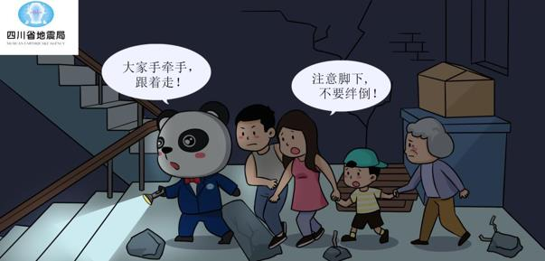
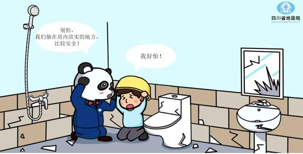
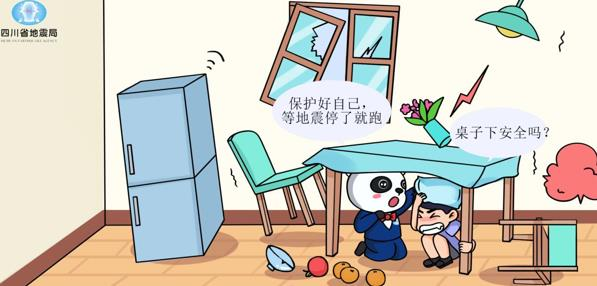
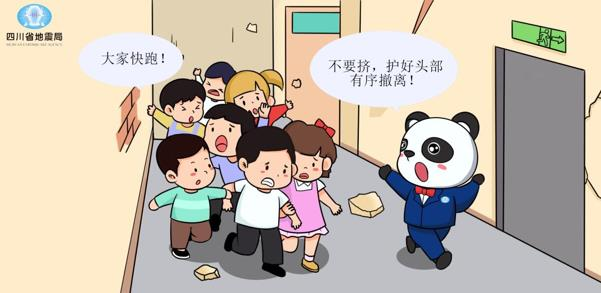

Earthquakes can happen during the day or at night. The 6.0-magnitude earthquake in Luzhou City, Sichuan Province, on September 16, and the 4.7-magnitude earthquake in Gongxian County on November 17, both occurred at night. If a strong earthquake occurs suddenly at night, especially when the power supply is interrupted, causing darkness indoors and outdoors, what should we do?
First, stay calm and take cover indoors. Generally, people are indoors at night, so when faced with a sudden earthquake, it is advisable to take cover indoors and evacuate outside after the strong shaking has subsided. Running outside in the dark can lead to injuries from falls or objects falling. For houses with a general brick-and-mortar structure, small enclosed spaces like bathrooms are often safer. The corners of load-bearing walls are also relatively safe. During an earthquake, prioritize these locations for taking cover. In recent years, many cities have seen the construction of reinforced concrete frame structures, which have some seismic resistance and are generally safer. In such buildings, areas near reinforced concrete frames and beside reinforced concrete shear walls (seismic walls) are considered relatively safe. Avoid areas near balconies and large windows, as they are relatively hazardous and should be avoided as much as possible.
When taking cover, choose to hide under or beside sturdy furniture, such as under a solid table or behind a high-backed sofa. Also, be cautious to avoid hanging objects like ceiling fans and large hanging lights, as well as furniture or large household appliances that may tip over, such as tall bookshelves, wardrobes, cabinet-type air conditioners, or refrigerators.
If you are in bed when the earthquake happens and cannot get up in time to take cover, you can even roll to the bedside wrapped in a blanket, lie down, and protect your head with a pillow or cushion. This can provide some protection.
Second, find suitable lighting tools. A flashlight is the best lighting tool. Nowadays, most phones have flashlight functions and can be used temporarily as flashlights. Be extremely cautious when using open flames for lighting. Only use lighters, candles, or homemade torches when it is confirmed that there is no gas leakage and there are no flammable substances nearby. Always be mindful of fire prevention!

Third, form a "human chain" and evacuate in an orderly manner. Intense shaking generally does not last too long. After the earthquake ends, evacuate outdoors. When evacuating in the dark, it's best to form a "human chain." Knowledgeable individuals familiar with the building's interior, courageous, physically strong individuals should lead, with the leading person holding a lighting device. The rest of the people should hold hands, proceed in a single file, and descend from the building. The evacuation should be slow, and when turning corners, going downstairs, or encountering obstacles, verbal communication should be used to remind and coordinate, ensuring safety. Each "human chain" should not be too long. In situations with a large number of people, multiple chains can be formed and evacuate in groups.

If there is absolutely no lighting equipment available, evacuation in the dark can only be done by feeling the way. In this case, the "human chain" method is even more critical. The person at the front can use both hands to feel the way, and each person behind should hold onto the waistband or clothes of the person in front with one hand while feeling their way forward with the other hand. The areas to feel for are generally the walls and handrails of stairs. The pace should be slower, and attention should be paid to verbal communication and coordination to ensure safety. After a strong earthquake, elevators are often prone to malfunctions and accidents such as power outages, so never use elevators during evacuation!
During evacuation, it must be orderly. When going downstairs in the dark, do not run, only walk. Keep in mind that in evacuations after the earthquake has ended, there is no need to rush. An orderly evacuation may seem slower, but it is much more effective. Otherwise, attempting to move too quickly could lead to stampedes and crushes, causing significant harm.
We believe that by mastering these essentials, if you encounter an earthquake at night, you will be able to respond calmly, mitigating casualties and losses as much as possible.